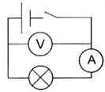

Determinarea temperaturii filamentului unui bec
Scopul lucrării:
Să
se determine temperaturii filamentului unui bec electric
Utilaj:
Laborator virtual
, Sursă de curent, bec, multimetru, întrerupător, fire de conexiune,
Note teoretice:
Pentru conductoarele metalice dependența
rezistenței de tensiune este dată de:
(1)
unde Rº este rezistența la temperatura inițială Tº,
- coeficientul de temperatură al rezistenței
(pentru wolfram)
,iar T este temperatura finală. Ținând cont că rezistența este dată de
,avem:
(2)
Schema:

La realizarea etapelor veți ține cont de următorii paÛi:
- Alegeți becul cu incandescență din dispozitive setând puterea becului
în intevalul 60W-100W(fiecare elev iÛi alege valoarea pentru putere. Poate fi de exemplu: 67, 98 etc)
- Poziționați pe masa de lucru un bec cu incandescență
- Alegeți din setul de instrumente ohmetrul
- Conectați la bornele becului Ûi înregistrați valoarea Rº
- Montați circuitul electric conform schemei elecrice
- Determinați temperatura filamanetului becului conform formulei 2
- Completați tabelul
| R0 (ohm) |
t0 (C) |
U, (V) |
I,(A) |
R(ohm) |
t(C) |
|
|
|
|
|
|
Răspunde la întrebarea:
De ce becurile cu incandescență ard de cele mai multe ori la pornire?
Formulează concluziile de rigoare.
Plasează până la sfârÛitul lecției în studii